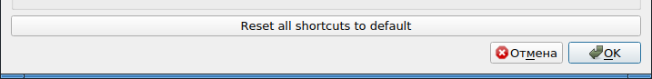
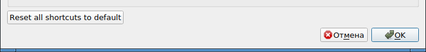

Очень часто при проектировании интерфейса в Qt программист сталкивается с тем, что кнопки класса QPushButton растягиваются на всю ширину имеющегося места в слое. В то же время, желательно было бы, чтобы кнопка просто вмещала в себя текст своей надписи, и не более того.
Исправить размер кнопки можно с помощью задания правил изменения размеров через объект QSizePolicy. Делается это так:
button=new QPushButton(tr("Reset all shortcuts to default"), this);
button->setSizePolicy(QSizePolicy(QSizePolicy::Maximum,
QSizePolicy::Fixed,
QSizePolicy::ToolButton));
Без установки правил изменения размера кнопка вытягивается по горизонтали на всю ширину слоя:

А если задать вышеуказанные правила, кнопка становится шириной равной ширине текста:

Отдельным вопросом стоит странность в правиле: по ширине задается правило QSizePolicy::Maximum, которое почему-то дает минимальную ширину кнопки. Если же написать QSizePolicy::Minimum, то кнопка опять станет растягиваться на всю ширину слоя.
Документация немного проливает свет на то, почему так происходит:
QSizePolicy::Minimum
The sizeHint() is minimal, and sufficient. The widget can be expanded, but there is no advantage to it being larger (e.g. the horizontal direction of a push button). It cannot be smaller than the size provided by sizeHint().
QSizePolicy::Maximum
The sizeHint() is a maximum. The widget can be shrunk any amount without detriment if other widgets need the space (e.g. a separator line). It cannot be larger than the size provided by sizeHint().
Примерный перевод:
QSizePolicy::Minimum
Значение sizeHint() считается минимально допустимым. Виджет может быть расширен, но нет никакого приоритета в том, чтобы он стал больше (например, размер кнопки в горизонтальном направлении). Виджет не может стать размером меньше, чем значение sizeHint().
QSizePolicy::Maximum
Значение sizeHint() считается максимально допустимым. Виджет можно уменьшать до любого размера без всякого ограничения, если другим виджетам требуется пространство (примером может быть сепаратор/разделительная линия). Виджет не может принять размер больше, чем значение, выдаваемое функцией sizeHint().
В общем, вопрос пока остается сложно объяснимым, но, как минимум, вышеприведенное решение работает.